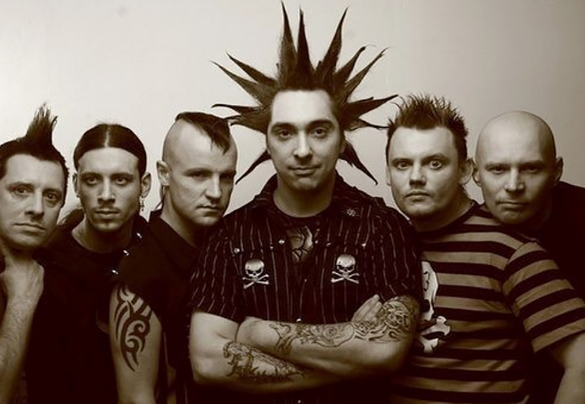
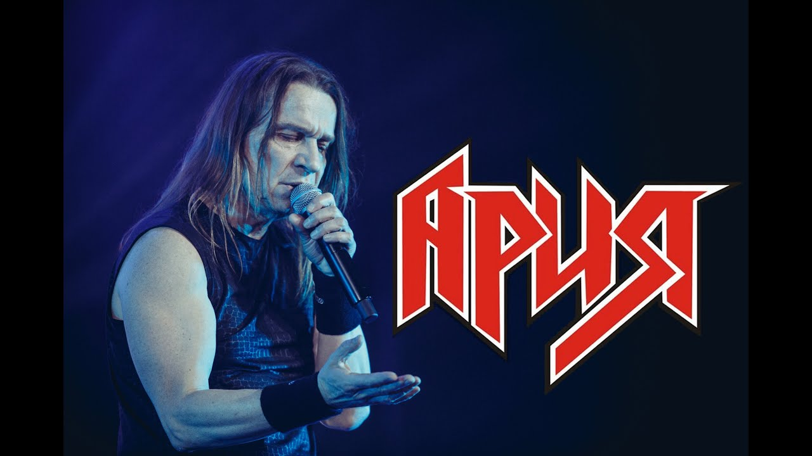
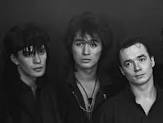

|  |
«Король и Шут» — советская и российская хоррор-панк-группа из Санкт-Петербурга. Группа была образована в Ленинграде в 1988 году. После смерти её лидера и одного из основателей Михаила Горшенёва 19 июля 2013 года выступает только в рок-мюзикле TODD. Выделяется своим необычным для классического панк-рока стилем. |
|
|  |
Ария - советская и российская хеви-метал-группа. Одна из самых успешных российских рок-групп, при этом — это одна из немногих российских метал-групп, достигших серьёзного коммерческого и творческого успехов и популярности за пределами поклонников хэви-метала. |
|
|  |
Кино́ (раннее название — «Га́рин и гиперболо́иды») — одна из самых популярных советских рок-групп 1980-х годов, входившая в состав ленинградского рок-клуба[3]. Лидером группы и автором текстов песен и музыки, исполняемых ею на концертах, был Виктор Цой |